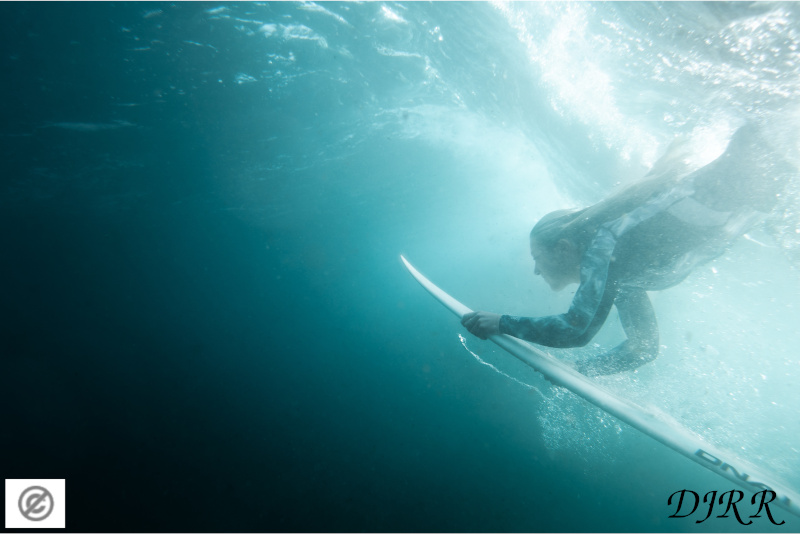

ZONA DE IMAGEN

ZONA DE JQUERY
Opciones para aplicar a la imagen situada en ZONA DE IMAGEN
- Opción 1: Poner borde azul con un grosor de 10px.
- Opción 2: Aplicar a la imagen un filtro gris con valor 100%.
- Opción 3: Cambiar las dimensiones de la imagen dejándola con 150px de ancho por
100px de alto.
- Opción 4: Hacer desaparecer con un efecto fadeOut la imagen y que aparezca con un
filtro invertido al 100% y efecto fadeIn.